הצוותים שלכם מתחילים לעבוד עם AI כבר מחר, והמערכת שאתם צריכים עולה לאוויר בימים ולא ברבעונים. אצל רוב הלקוחות שלנו התוצאה הראשונה הייתה באוויר כבר בשבוע הראשון.
לכל היותר, ברוב הפרויקטים, עד שהגרסה הראשונה באוויר
15
פטנטים רשומים בארה״ב
חברות שעבדנו איתן ובתוכן

ציר זמן
זה הקצב שתקבלו.
כל נקודה היא תוצר שמסרנו ללקוח במהלך 2026. רובם עלו לאוויר תוך שבוע, כך שאתם לא מחכים חודשים כדי לראות אם זה עובד. עמדו על נקודה כדי לראות מה נמסר.
בין 5 ל 8 פרויקטים בכל חודשקצב קבוע לאורך כל השנה, כך שאפשר לתכנן עלינו.
כמה לקוחות במקבילהפרויקטים רצים במקביל, ואף לקוח לא מחכה בתור.
באוויר תוך שבועברוב הפרויקטים אתם רואים תוצאה אמיתית כבר בשבוע הראשון, לא מצגת.
עבודות חסויות מופיעות כנקודה בלי קישור.
פרויקטים
מערכת שעובדת אצלכם, בלי לגייס צוות.
אתם מקבלים מערכת שלמה, לא רק מודל: מהנתונים ועד ההחלטה, כולל פריסה, בדיקות ומסירה מסודרת לצוות שלכם. ככה זה נראה אצל יצרנים, ארגונים וסטארטאפים שעבדנו איתם.
Danpal · יצרנית פאנלים לחזיתות
שרטוטי ייצור בלחיצה אחת, במקום עבודה ידנית.
אצל Danpal, כל שרטוט ייצור דו ממדי הוכן ידנית מתוך הרכבה תלת ממדית. היום סוכן AI עושה את זה בתוך SolidWorks: מייצר שרטוט, משווה אותו לשרטוט הייחוס, מתקן ומנסה שוב עד שהתוצאה נכונה. השרטט מקבל את השרטוט בלחיצה אחת מהדפדפן ומתפנה לעבודה שדורשת אותו.
פלסגד רצו בקרת איכות ויזואלית מבוססת AI. לפני שהזמינו ציוד, הרצנו בשבילם ניסוי של 674 בדיקות בפחות מדולר. התברר שגם מצלמה של 2 מגה פיקסל מספיקה: דיוק של 78 עד 80 אחוז, ואף חלק תקין לא נפסל בטעות. המצלמה של 20 מגה פיקסל שהופיעה בהצעת המחיר פשוט לא הייתה נחוצה.
אצל Focus, הכנת הצעה ללקוח הייתה עבודה ידנית ועמוסת מסמכים. היום יש להם תהליך מונחה שמוביל מהאפיון ועד ההצעה המוכנה, כך שהצוות מקדיש את הזמן ללקוח ולא לניירת.
Precise / Lawyal · טכנולוגיה למשרדי עורכי דין
התאמת חשבוניות לבנק, בלי לעבור שורה שורה.
המנוע מתאים כל תנועה בבנק לחשבונית הנכונה, ומשאיר לאדם רק לאשר בסוף. אב טיפוס עבד כבר אחרי 4 ימי עבודה. משם בנינו אותו כמנוע בענן של AWS ששולב בפלטפורמה של Lawyal, יחד עם המפתחים של הלקוח, כך שהידע נשאר אצלם.
4 ימים עד אב טיפוס עובד
AWS Lambda, ECS ותשתית כקוד
STC · הנדסה
DrawingExtract
במקום לקרוא שרטוטים הנדסיים ולהעתיק מהם נתונים ביד, המערכת קוראת אותם בעזרת Claude ומחזירה נתונים מסודרים. כל התשתית מוגדרת כקוד, והגרסה הראשונה הייתה באוויר תוך פחות משבוע.
פחות משבוע עד גרסה באוויר
Terraform ותהליכי רקע
Ready Group · פיתוח תוכנה וחומרה · ייעוץ
הובלת AI ברמת הנהלה, בלי לגייס מנהל במשרה מלאה.
מאז 2024 Ready Group מקבלים מאיתנו Chief AI Officer חיצוני, שמוביל את צוות הבינה המלאכותית ושותף להחלטות הגדולות. יחד תכננו מעבדת מחקר AI לשלוש שנים בהיקף 10 מיליון דולר, מהמודל העסקי ועד השאלה אם החשמל בבניין יחזיק את השרתים.
$10M היקף התוכנית
3 שנים מפת דרכים
מעל שנתיים של ליווי
הדרכות
הדרכה שמשאירה אחריה משהו שעובד.
הצוותים שלכם יוצאים מהסדנה עם אוטומציה שעובדת על הכלים ועל הנתונים שלכם, ועם הקובץ שמפעיל אותה. משהו שמשתמשים בו כבר ביום ראשון, ולא עוד מצגת.
על הנתונים שלכםמתרגלים על המערכות, המסמכים והמספרים האמיתיים שלכם.
כולם מסיימיםגם כשהרמות בחדר שונות, כל משתתף יוצא עם משהו שעובד.
הידע נשאר אצלכםקבצי skill שאפשר להשתמש בהם שוב, ולא הדגמה של פעם אחת.
מוכנים תוך ימיםעמוד הסדנה שלכם באוויר עוד באותו שבוע.
תוכנית לכל תפקיד, וכל אחד יוצא עם כלים לעבודה שלו.
ארכיטקטים, מנהלי מוצר, מנהלי פרויקטים ומהנדסים קיבלו כל אחד תוכנית שבנויה סביב העבודה היומיומית שלו. האתרים לארכיטקטים ולמנהלי המוצר עלו יום אחרי יום, ובאתר של הארכיטקטים יש סימולטור חי שמראה מראש כמה יעלה ניתוב בין מודלים ומה יהיה זמן התגובה.
מעל 100 עוזרות ועוזרי מנכ״לים שעובדים אחרת, ואחריהם צוותי הפיתוח.
העוזרות והעוזרים קיבלו תוכנית של ארבעה מפגשים, עם אוטומציות ליומן, לנסיעות, לסיכומים ולתקשורת בצוות. המפתחים קיבלו חמישה קורסים קצרים של שעתיים וסדנה על בסיסי קוד גדולים, עם סביבת תרגול שעולה בפקודה אחת.
אחרי הסדנה הראשונה האנליסטים כבר שולפים נתונים בעצמם, וצוות הדאטה מקבל הרבה פחות פניות. בסדנה השנייה הם בונים מודל לחיזוי נטישה ומודל לחיזוי הכנסות, על עותק סינתטי של הנתונים שלהם, ונשארים עם בערך 120 שורות Python שהם מריצים בעצמם כל חודש.
קוד חומרה שנכתב על ידי AI, עם הוכחה שאפשר לסמוך עליו.
צוות FPGA קיבל תוכנית של שמונה שבועות להטמעת AI, ולצידה הוכחה מעשית: מפענח לתקן IEEE 802.3ah שנכתב על ידי AI ונבדק בשלוש דרכים בלתי תלויות. התוכנית וההוכחה היו מוכנות תוך 48 שעות.
סטודיו לכתוביות שמאפשר לערוך כל מילה בנפרד, עם כתוביות בעברית שמוצגות נכון מימין לשמאל. בדקנו 12 מתחרים, ואף אחד מהם לא עושה את זה. כל בחירה של מודל נעשתה לפי השוואה מול תמלול שנעשה בידי אדם.
סורק את ההיסטוריה של 22 כלי פיתוח מבוססי AI ומוצא מפתחות API וסיסמאות שנשארו שם. רץ מקומית על macOS, Linux וגם Windows.
6 גרסאות תוך 10 ימים
initrepopagesdeploy13 s
מנוע המצגות · כלי פנימי
הסיבה שתקבלו תוצאות מהר
תשתית למצגות אינטראקטיביות ממותגות, עם פקודה אחת שפותחת ריפו, מגדירה אחסון ומעלה לאוויר. בשבועות הראשונים יצאו ממנה שמונה מצגות ללקוחות, ואחת מהן עלתה 13 שניות אחרי הקומיט הראשון.
איך זה עובד
מהר, בלי לוותר על איכות.
01מקשיבים לכם
שיחת היכרות, ואחריה לומדים את המערכות, הנתונים והמגבלות שלכם. ההצעה שתקבלו מתאימה לכם, לא תבנית.
02הצעה תוך 48 שעות
תוכנית כתובה: מה תקבלו, מתי, ואיך נדע יחד שזה הצליח.
03בונים על תשתית מוכנה
מערכת מיתוג, מנוע מצגות, תבניות לסדנאות וספרייה של Claude Code skills. כל מה שחוזר על עצמו כבר מוכן, אז הזמן והתקציב שלכם הולכים לבעיה שלכם.
04באוויר בשבוע הראשון
כבר בשבוע הראשון אתם רואים את הדבר האמיתי ולא הדמיה, ויכולים לכוון אותו תוך כדי עבודה עד המסירה.
על אבישי
15פטנטים רשומים בארה״ב
7 שניםבפייפאל, בתחום הסיכונים וההונאות
12+ שניםשל AI בפרודקשן
אבישי מרון
מייסד ומנכ״ל AM Consulting
כבר יותר משתים עשרה שנה אבישי מכניס AI לפרודקשן, במקומות שבהם לכל טעות יש מחיר. בפייפאל הוא בנה מודלים לזיהוי הונאות שמגנים על מאות מיליוני לקוחות, והוביל את צוות הדאטה סיינס שעבד על תיק אשראי של 2 מיליארד דולר. אחר כך עמד בראש תחום הדאטה בלילי, ובראש תחום הדאטה והבינה המלאכותית בבנק הדיגיטלי וואן זירו. בשנת 2023 הקים את AM Consulting, ואת הניסיון הזה הוא מביא לכל פרויקט: מערכות שחייבות לעבוד נכון, גם כשהן נבנות מהר.
2023 עד היוםמייסד ומנכ״ל, AM Consultingובמקביל, מאז 2024, Chief AI Officer חיצוני של Ready Group
2022 עד 2023ראש תחום הדאטה והבינה המלאכותית, ONE ZEROבנק דיגיטלי
2021 עד 2022ראש תחום הדאטה, Liliפינטק
2014 עד 2021PayPalSenior Data Scientist, אחר כך Lead Principal Data Scientist, ואז Data Science Manager
15 פטנטים רשומים בארה״ב, מתשע המצאות בפייפאל
קיבוץ עסקאות בזמן אמת: כל תשלום משויך מיד לקבוצה של עסקאות דומות מהעבר, וכך מזהים הונאה. US10866995US11507631US12271870
חשבונות שקשורים להונאה מוכרת: מזהה חשבונות שחולקים מאפיינים עם כמה חשבונות הונאה ידועים. US11182795US12469035
הנדסת פיצ׳רים אוטומטית: בוחרת ובונה פיצ׳רים למודלים של עסקאות. US11443224
פענוח מחרוזות אקראיות: מסווג כתובות URL ומחרוזות שנראות אקראיות, כדי להבין מה המשתמש מנסה לעשות. US11249965US12259860
מיקום של כתובות רשת: מיקום אמין מתוך אותות רועשים. US10762103US11609929
מיזוג נתונים לפי קרבה: ממזג מאגרי מיקום, עם תיקוף. US11422983
Join מבוזר לפי טווחים: חיבור מהיר של טבלאות לפי טווחים, למשל טווחי IP. US10706050
סיווג אתרים בכמה שלבים: שרשרת של מודלים שמסווגת אתרים בעלות נמוכה. US10936677US11475079
הערכה אוטומטית של התראות שווא בהתאמת אתריםUS11468129
MBA בכלכלה כמותית ואקונומטריקה, האוניברסיטה הפתוחה · לימודי תואר שני במדעי המחשב, האוניברסיטה העברית · הרצאות: ועידת ישראל לטכנולוגיות המידע, מיטאפ DataTalks.
מה אומרים עלינו
״אבישי ליווה אותנו לאורך כל התכנון של תוכנית לשלוש שנים, בהיקף 10 מיליון דולר, להקמת מעבדת מחקר AI. מבניית מודל עסקי מפורט וישים ועד בדיקה שתשתית החשמל בבניין תעמוד בעומס של השרתים, הוא הפגין מומחיות יוצאת דופן ותשומת לב לכל פרט.״
Racheli Ganot מייסדת ומנכ״לית Ready Group
״הובלה ופיתוח של פתרונות AI דורשים שילוב נדיר של ראייה אסטרטגית ומומחיות מקצועית. עם AM Consulting לצידי, אני מקבל בדיוק את השילוב הזה.״
Imri Marcus מנכ״ל AzgardAI
בואו נדבר
ספרו לנו מה אתם צריכים.
תוך 48 שעות תקבלו הצעה כתובה. הדרכה לצוותים שלכם, או מערכת שנבנה בשבילכם.